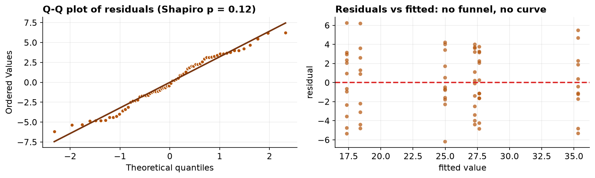
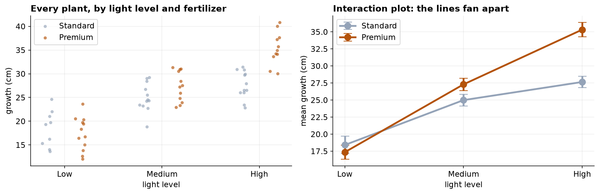
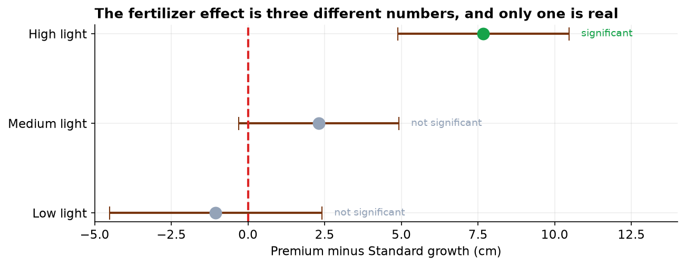

Fertilizer Formulation and Light Exposure in a Factorial Greenhouse Trial
A two-way analysis of variance with simple-effects decomposition of a significant interaction.
Keywords: factorial ANOVA; interaction; simple effects; partial eta-squared; Type II sums of squares; conditional effects.
1. Introduction
Factorial designs cross two or more factors so that each is evaluated at every level of the others. Beyond efficiency, the decisive advantage is that they estimate the interaction: whether the effect of one factor varies across levels of another. Separate one-factor experiments cannot recover this quantity at all, and in its presence a marginal (main) effect is a weighted average over conditions in which the true effect differs.
This trial crossed fertilizer formulation with light exposure. The three null hypotheses are equality of fertilizer marginal means, equality of light marginal means, and additivity (no interaction), each evaluated at α = 0.05.
2. Data
Records comprise a plant identifier, fertilizer formulation, light level, and growth in centimetres, with twelve plants allocated to each of the six cells. Both factor labels were recorded with inconsistent capitalization and were normalized before analysis; duplicates, missing values, and out-of-range measurements were then removed (Table 1). Cleaning left slightly unequal cell counts, motivating Type II sums of squares.
| Step | Rule | Removed | Remaining |
|---|---|---|---|
| Raw export | — | — | 74 |
| Normalize labels | trim and case-fold both factors | 0 | 74 |
| De-duplication | drop duplicate rows | 2 | 72 |
| Missing outcome | drop blank growth_cm | 2 | 70 |
| Range filter | retain 0 ≤ growth ≤ 100 | 2 | 68 |
| Light | Standard mean (n) | Premium mean (n) | Premium advantage |
|---|---|---|---|
| Low | 18.41 (n=9) | 17.36 (n=12) | -1.05 cm |
| Medium | 24.99 (n=12) | 27.30 (n=12) | +2.31 cm |
| High | 27.65 (n=12) | 35.33 (n=11) | +7.68 cm |
3. Methods
The model growth ~ fertilizer × light was fitted by ordinary least squares and evaluated by two-way ANOVA with Type II sums of squares, appropriate for a nearly balanced design and invariant to term order in the absence of a strong imbalance. Residual normality was assessed by the Shapiro-Wilk test and a normal quantile-quantile plot, and homoscedasticity by Levene's test applied across all six treatment cells, supported by a residual-versus-fitted plot. Effect sizes are partial eta-squared. Because the interaction was significant, the fertilizer contrast was decomposed into simple effects estimated within each light level by Welch's t-test with Cohen's d. Analyses used statsmodels and SciPy in Python 3.
4. Results
Model diagnostics support the analysis: residuals were consistent with normality (W = 0.972, p = 0.123) and cell variances were homogeneous (Levene W = 0.341, p = 0.8859), with cell standard deviations spanning only 2.92 to 3.83 cm. The residual-versus-fitted plot showed neither heteroscedastic funnelling nor curvature.

| Term | Sum of squares | df | F | p | Partial η² |
|---|---|---|---|---|---|
| Light | 2106.61 | 2 | 96.50 | < 0.001 | 0.757 |
| Fertilizer | 163.24 | 1 | 14.96 | 0.0003 | 0.194 |
| Fertilizer × Light | 212.69 | 2 | 9.74 | 0.0002 | 0.239 |
| Residual | 676.76 | 62 | — | — | — |
The interaction is significant, F(2, 62) = 9.74, p = 0.0002, partial η² = 0.239. This determines the interpretation of everything above it: the fertilizer main effect, though significant, is a marginal average over conditions in which the true effect differs in both sign and magnitude, and is therefore not the appropriate summary. Light exerts the dominant influence (partial η² = 0.757) under either formulation.

| Light level | Premium − Standard | 95% CI | p | Cohen's d | Decision |
|---|---|---|---|---|---|
| Low | -1.05 cm | [-4.52, 2.41] | 0.529 | -0.28 | retain H₀ |
| Medium | +2.31 cm | [-0.30, 4.92] | 0.080 | +0.75 | retain H₀ |
| High | +7.68 cm | [4.89, 10.47] | < 0.001 | +2.41 | reject H₀ |

The decomposition is unambiguous. At low light the formulations are indistinguishable, with the point estimate nominally favoring Standard. At medium light the advantage is positive but its interval includes zero. At high light the advantage is 7.68 cm with a confidence interval well clear of zero and a very large standardized effect (d = 2.41).
5. Interval estimates for the simple effects
| Light level | Premium − Standard | 95% CI | Interpretation |
|---|---|---|---|
| Low | −1.05 cm | −4.52 to +2.41 | no benefit demonstrated |
| Medium | +2.31 cm | −0.30 to +4.92 | unresolved |
| High | +7.68 cm | +4.89 to +10.47 | benefit established |
| Partial η², interaction | 0.239 | 0.106 to 0.437 | percentile bootstrap |
The interaction establishes that the fertilizer effect is conditional on light level; the simple-effect intervals quantify that conditionality in the units of the outcome. Under high light the benefit is bounded between approximately 4.9 and 10.5 cm. Under low light the interval includes negative values, so a decrement cannot be excluded.
Expressed this way the analysis yields three distinct recommendations rather than a single omnibus verdict, which is the practical justification for interpreting the interaction before the main effects. The averaged main effect of fertilizer describes no cultivation condition actually present in the experiment.
It should be noted that this is the only design in the series in which treatment levels were assigned by the investigator rather than observed. Reverse causation is precluded by temporal ordering and confounding is addressed by allocation, so causal language is warranted here in a way it is not elsewhere in the series. The warrant derives from the design and not from any property of the analysis.
6. Discussion
The substantive conclusion is conditional: the Premium formulation confers a growth advantage only under high light exposure. Under the tested low-light condition it confers none. Reporting the significant fertilizer main effect without qualification would communicate a general benefit that the data specifically contradict for two of the three conditions studied, and would misdirect purchasing decisions for growers operating in lower-light environments. This is the practical reason interactions are examined before main effects rather than alongside them.
Several limitations bound the inference. The light factor was manipulated at three discrete levels, so the fanning profile should not be extrapolated beyond the tested range; the mechanism implied, that the formulation supplies a nutrient that becomes limiting only when photosynthetic capacity is high, is a hypothesis this design suggests rather than establishes. The trial was conducted under uniform greenhouse conditions, so temperature, irrigation, and soil were controlled rather than representative, and effects conditional on light are plausibly conditional on these as well. Cleaning produced modest cell imbalance; Type II sums of squares were used accordingly, and under severe imbalance the choice of sums-of-squares type can materially alter main-effect tests and should always be reported.
Finally, the economic dimension belongs in the report. A formulation that helps only under high light carries a cost that is not recovered in other conditions, so the analytical result translates into a targeted rather than a blanket recommendation.
7. Conclusion
Growth was influenced by light (partial η² = 0.757) and, conditionally, by fertilizer formulation. The fertilizer × light interaction was significant, F(2, 62) = 9.74, p = 0.0002, and simple-effects decomposition localized the entire fertilizer benefit to the high-light condition (+7.68 cm, p < 0.001), with no detectable benefit at low or medium light. The marginal fertilizer effect should not be reported as a general finding.
References
- Fisher, R. A. (1935). The Design of Experiments. Oliver & Boyd.
- Levene, H. (1960). Robust tests for equality of variances. In Contributions to Probability and Statistics (pp. 278–292). Stanford University Press.
- Welch, B. L. (1947). The generalization of Student's problem when several different population variances are involved. Biometrika, 34(1–2), 28–35.
- Langsrud, Ø. (2003). ANOVA for unbalanced data: Use Type II instead of Type III sums of squares. Statistics and Computing, 13(2), 163–167.
- Cohen, J. (1988). Statistical Power Analysis for the Behavioral Sciences (2nd ed.). Lawrence Erlbaum.
- Rothman, K. J., Greenland, S., & Lash, T. L. (2008). Modern Epidemiology (3rd ed.), ch. 5 on effect-measure modification. Lippincott.
Reproducibility
The dataset (capstone-plant-growth-two-factors.xlsx) and an executable notebook reproducing every statistic, table, and figure accompany the chapter. Analyses use NumPy, pandas, SciPy, statsmodels, and Matplotlib.